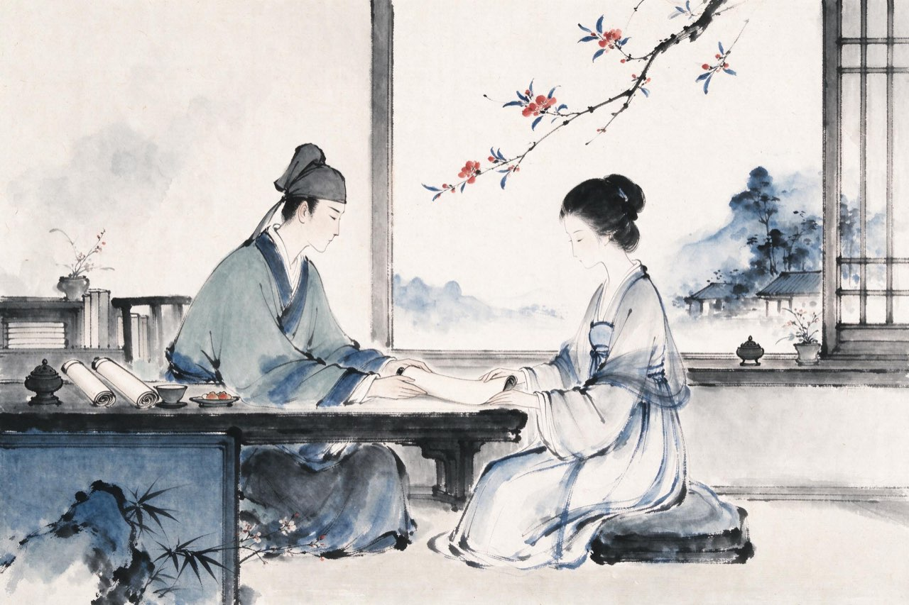
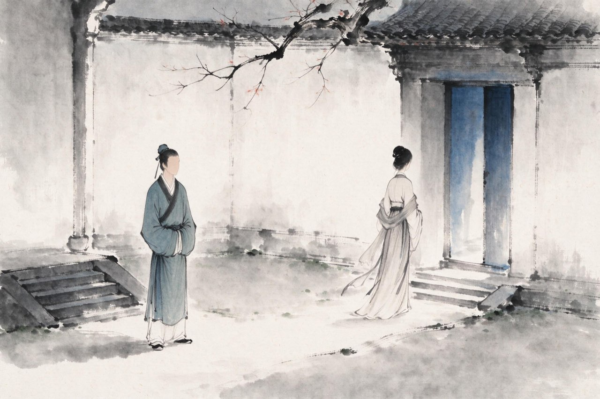

陆游 · 1144-1155
沈园
钗头凤

二十岁成婚
绍兴十四年前后，你二十岁，成了婚。
她也读书，也能诗文。花前月下的小令，你们互相唱和；金石书画的赏鉴，你们一起勘校。你写「红酥手」里那样的酒盏，她斟；你读书读到会心处，她就在灯的另一侧。
亲事是长辈定的，两个年轻人却真的投契。旁人看来，这是山阴陆家一段再圆满不过的姻缘。
没有人想到，它只维持了短短几年。
注
- 成婚年份为推定；唐氏家世、闺中唱和情形，均出宋人笔记，具体细节不可确考，演绎

仳离
变故从家里来。不知从何时起，母亲对她有了芥蒂——缘由，没有任何记载留下来。只有结果：这段婚姻，家里不容。
你抗争过。据说曾另筑别院安置她，被母亲发现，终至不能保全。一纸离书，两个年轻人各自天涯。
不久，你另娶王氏；她改嫁宗室赵氏。路就此断尽了。
你们的婚姻短，此后各自的岁月却都很长。这页写到仳离为止——她的后半生，要等几十年后的诗来告诉你。
注
- 母不悦缘由史无明文，无子说、姑媳失和说皆出后世推测，不作叙述
- 别院安置事出《齐东野语》，属笔记记载，细节存疑，此处仅一句带过
- 本页深色底：婚变离散之痛
科场三幕
绍兴二十三年，你到临安应试。两浙转运司的锁厅试上，主考官读了你的卷子，把你取为第一——排在第二的，是宰相秦桧的孙子秦埙。秦桧大怒。
次年礼部试，报复到了：你的卷子被直接黜落。同科里都知道那篇文章本该在哪儿，没有人敢说话。功名之路，被一只手按死。
你回山阴，等待。这一等又是两年。
绍兴二十五年十月，秦桧死了。朝局的坚冰裂开一道缝——你不知道的是，你这辈子与科场、与朝局的纠缠，才刚刚开始。
注
- 擢陆游第一的主考为陈之茂，因取陆游置秦埙前而遭秦桧记恨
- 礼部试黜落，通行从秦桧挟怨说，《宋史》本传系于锁厅试怒后
绍兴二十五年春，禹迹寺南的沈氏园，花开正好。你进园游春，在园中遇见了她——和她的后夫。数年不见，各自有家有路。她遣人送来酒肴。你在这份沉默的旧情前坐了很久，酒入了喉，往事漫上来——园壁就在手边，你提笔——
钗头凤·红酥手
红酥手，黄縢酒，满城春色宫墙柳。
东风恶，欢情薄。一怀愁绪，几年离索。错、错、错。
春如旧，人空瘦，泪痕红浥鲛绡透。
桃花落，闲池阁。山盟虽在，锦书难托。莫、莫、莫。
山盟虽在，锦书难托
注
- 沈园相遇、遣致酒肴、题壁，本事出《齐东野语》；题壁时地与《耆旧续闻》所记相合
- 「黄縢酒」一作「黄藤酒」——异文并录
- 题壁次年前后，她怏怏而卒——此事后文沈园诸诗再及
- 词写定系年从通行编年；本事出宋人笔记，词境与本事相合